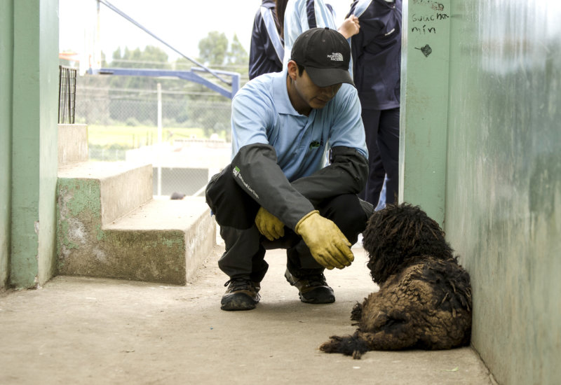

¿QUÉ ES SER UN RESCATISTA?
Ser un rescatista de animales es una labor que requiere dedicación, compasión y habilidades prácticas. Estos individuos desempeñan un papel crucial en la protección y bienestar de los animales, y su trabajo puede tener un impacto profundo tanto en la vida de los animales como en la comunidad.

- Intervención: Rescatistas responden a situaciones donde los animales están en peligro, como en casos de abuso, abandono, accidentes o desastres naturales.
- Captura y Transporte: A menudo, deben capturar animales que están en situaciones difíciles y transportarlos a un lugar seguro, como refugios o clínicas veterinarias.
La mejor opción es llevar al animal a tu casa. La mayoría de refugios y ONGs enfrentan sobrepoblación, falta de recursos, y difícilmente podrán cuidarlo tan bien como tú. Si no pudieras quedarte con el perro o el gato, habla con tu familia y amigos. Explícales que es temporal, solo hasta encontrarle un hogar definitivo, y que pueden compartir los gastos y hasta alternar hogares para el animal.
Un hogar provisional no tiene que ser perfecto o espacioso. Basta tener un área de servicio o una esquina en el patio, en donde el animal pueda resguardarse del frío y del calor. Improvisa una cama con un cobertor o una sábana vieja. Lo ideal es darle alimento empacado. Si no tuvieses cómo comprarlo, puedes combinar temporalmente comidas caseras como arroz, pollo, papas o legumbres cocinadas. No utilices sal ni aceite. Para los gatos, dales carne en trozos pequeños, como pescado, pollo carne molida.
No todo animal en la calle fue abandonado, y es especialmente notorio cuando un animal está bien entrenado, bien alimentado o con collar. Asegúrate de que no está solo perdido. Conversa con los vecinos, pregunta en los comercios cercanos y pregunta por los dueños en redes sociales o en sitios especializados en Internet.
Esta es la mejor manera para encontrar un dueño, antiguo o nuevo. Utiliza tu perfil en las redes sociales, sea Facebook, Twitter, Instagram o sitios de adopción de animales. ¡Lo importante es hacerte escuchar!
Tómale una foto, cuenta cómo encontraste al animal y brinda detalles de su personalidad. ¿Es muy dócil? ¿Juguetón? ¿Le gusta que le acaricien el cuello, o detrás de las orejas? Esto ayuda a que las personas creen un vínculo emocional con el animalito y quieran adoptarlo. Detalla también su tamaño y edad aproximada, y no olvides de poner público el álbum de fotos, para que sea fácil de compartir, de etiquetar a amigos, divulgar en páginas, etc.